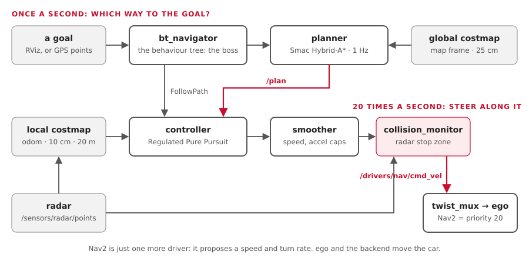

Nav2 is ROS's stock navigation system: give it a goal, and it plans a path and steers along it. On our car it is just one more driver: it proposes a speed and a turn rate, like the joystick does.
You'll learn:
- the parts: goal, planner, controller, costmaps, behaviour tree;
- how Smac Hybrid-A* plans paths a car can really drive;
- how Regulated Pure Pursuit steers, with one example in numbers;
- what happens when things go wrong: recovery and
collision_monitor; - how GPS waypoints become Nav2 goals;
- our settings, and where they live.
Costmaps have their own page: Costmaps. The big picture of maps and GPS is in Maps and position.
The picture

| Part | Job | Ours |
|---|---|---|
| Goal | where to go: a pose in the map frame |
RViz's 2D Goal Pose, an action call, or GPS waypoints from street_router or the language tools |
| bt_navigator | the boss: runs a behaviour tree that calls the others | behavior_trees/navigate_to_pose_car.xml |
| Planner | finds a path from here to the goal | Smac Hybrid-A*, on the global costmap |
| Controller | steers along that path | MPPI (or Regulated Pure Pursuit: controller:=rpp), on the local costmap, 20 Hz (path followers) |
| Velocity smoother | caps speed and acceleration | 1.0 m/s, 1.0 m/s² up, 2.0 m/s² down |
| collision_monitor | last-moment stop for radar or lidar points ahead | where the radar or the lidar runs |
| Out | /drivers/nav/cmd_vel → twist_mux (priority 20) → ego |
Nav2 never talks to the wheels. ego turns its turn rate into a steering angle (Learn: control).
1. The planner: Smac Hybrid-A*
A* searches a grid for the cheapest way from A to B. A plain grid search gives paths with sharp corners: fine for a robot that spins on the spot, not for a car.
Hybrid-A* searches in (x, y, heading), and only uses moves a car can make:
| Move | |
|---|---|
| straight on | |
| left, at the tightest turn | radius 2.87 m (from vehicle.yaml) |
| right, at the tightest turn | the same |
So every path it returns is one our car can follow.
Setting (nav2.yaml) |
Ours | Means |
|---|---|---|
motion_model_for_search |
DUBIN |
forward only. REEDS_SHEPP (forward and back) with reversing:=true (Reversing) |
minimum_turning_radius |
3.59 m | set by the launch file: wheelbase ÷ tan(max steer) = 2.87 m, × 1.25, so the controller has steering to spare |
angle_quantization_bins |
72 | headings in 5° steps |
max_planning_time |
5.0 s | give up after this |
tolerance |
0.5 m | a goal inside an obstacle: plan to within 0.5 m |
smooth_path |
true | smooth the corners afterwards |
2. The controller: Regulated Pure Pursuit
Since 22 Oct the default is MPPI, which tries 2000 futures through a model of the car
(path followers). Pure pursuit is still the easiest way in, and
controller:=rpp brings it back.
Pure pursuit is how you steer a bike: look at a point on the path a little ahead (the carrot), and turn so you'd arc through it.
carrot ● (on the path, the lookahead distance ahead)
╱
╱ arc through it
car ▲The arc's curvature = 2 × (how far the carrot is to the side) ÷ (lookahead)².
Example: the carrot is 2.0 m ahead and 0.4 m to the left.
| Step | Sum | Result |
|---|---|---|
| Curvature | 2 × 0.4 ÷ 2.0² | 0.2 per m (a 5 m circle) |
| Turn rate at 1.0 m/s | 1.0 × 0.2 | 0.2 rad/s → /drivers/nav/cmd_vel |
| ego's steering angle | atan(1.57 × 0.2 ÷ 1.0) | 0.304 rad |
Regulated means it also slows down when it should:
| Slows down | Our setting |
|---|---|
| in turns tighter than 3.0 m radius | down to 0.25 m/s |
| near the goal | from 1.0 m out |
| if a collision is less than 1.0 s ahead | use_collision_detection: true |
| Setting | Ours | Why |
|---|---|---|
desired_linear_vel |
1.0 m/s | start slow; ego caps it too |
| Lookahead | speed × 1.5 s, kept between 1.5 and 4.0 m | short weaves, long cuts corners. About the wheelbase or more |
use_rotate_to_heading |
false | a car can't spin on the spot |
allow_reversing |
false | true with reversing:=true: it follows a path backwards (Reversing) |
Done when within 1.0 m and 0.75 rad (43°) of the goal: no tighter than GPS without RTK can tell (22 Oct; tighter, the car looped to fix misses it couldn't see). Stuck if in 10 s it neither moves 0.5 m nor turns 0.5 rad (29°): rocking back and forth in a three-point turn still counts.
3. Costmaps, in one line each
- Global: for the planner, in
map, the map file's size. - Local: for the controller, in
odom, 20 m × 20 m around the car.
Sizes, layers, sensors and inflation: Costmaps.
4. The behaviour tree: the boss
A behaviour tree (BT) is a flowchart that runs over and over. Ours is Nav2's standard tree, changed for a car.
Navigate (up to 6 tries)
├─ every 1 s: plan a path ── fails? clear the global costmap, try again
├─ follow the path ── fails? clear the local costmap, try again
└─ still failing? take turns: clear both costmaps, or wait 5 s| Changed for a car | Why |
|---|---|
| No Spin | a car can't turn on the spot |
| BackUp only with reversing | the *_car_reversing.xml trees back up 1 m at 0.25 m/s after the wait. Without something that sees behind the car, the *_car.xml trees: no BackUp |
| Server timeouts 1 s, not Nav2's 20 ms | a busy computer failed whole goals (the bench, 11 Oct) |
Reversing
One switch, reversing:=, on navigation.launch.py. On everywhere since 22 Oct (Ben:
"Yes the car can reverse"), but on the car only where something sees behind it: the roof
lidar (the radar faces forward; the rear camera, later). Without one, car.launch.py
keeps Nav2 forward only and says why (vehicle.blind_behind).
reversing:=false |
reversing:=true (the default: the car, Gazebo, the bench) |
|
|---|---|---|
Planner (motion_model_for_search) |
DUBIN: forward only |
REEDS_SHEPP: forward and back; a reverse metre costs 2x (reverse_penalty) |
Controller (allow_reversing) |
false | true: follows the backward parts |
MPPI's vx_min |
0 | -0.5 m/s |
| Velocity smoother's lowest speed | 0 | -0.5 m/s |
| Behaviour trees | *_car.xml: no BackUp |
*_car_reversing.xml: BackUp 1 m at 0.25 m/s |
| collision_monitor | the box ahead | the box ahead going forward, a box behind reversing (5) |
The 0.5 m/s is max_reverse_speed in vehicle.yaml: the one reverse speed for the whole car.
ego and the spine (MAX_REVERSE_SPEED in spine-core, also for the RC transmitter) cap
reversing at the same number, whoever drives.
| Where it is set | How |
|---|---|
vehicle.yaml |
max_reverse_speed: 0.50 |
aav_description/vehicle.py |
nav2_rewrites(v, reversing) (planner, controller, MPPI) and nav2_tuned(...) (the smoother's list, written into a copy of nav2.yaml) |
car.launch.py, sim.launch.py, bench.launch.py |
reversing:=true in all three; the car's needs the lidar running |
| Gazebo check | pixi run sim-check --rear-obstacle: backing up, the car stops for a post behind it (0.75 m short, 22 Oct) |
| Tests | test_vehicle.py (the values, and that each rewrite lands on a real key); test_behavior_trees.py (the two trees differ only by BackUp, inside the reverse speed) |
People can always reverse (joystick, keyboard, RC): this switch is Nav2's only.
5. collision_monitor: the last word
It sits between the smoother and twist_mux, and reads the radar's and the lidar's own
points, not the costmap. So it still stops the car if the planner, the controller or the costmap goes wrong.
| Setting | Ours |
|---|---|
| Stop zone | going forward (or standing): a box from the front bumper to 1 m ahead. Reversing: a box from the rear bumper to 1 m behind. Each 0.2 m wider than the car each side. Nav2's velocity_polygon picks one by the command's speed |
| Behind the car | only the lidar sees there (all round), not the radar. The rear camera's obstacles: later (TODO 25) |
| Points needed | 3 (one stray point mustn't stop the car) |
| Radar or lidar silent for | 1.0 s → stop |
| Guards | only Nav2. The joystick and keyboard reach twist_mux without it |
It runs with the radar or the lidar: on the bench, on the car, and in Gazebo's road and test_lot worlds.
When it stops the car backing up, the controller may pull forward and try again; each try stops at the box. Nothing is hit, but the car rocks until the way is clear.
6. GPS waypoints
street route (lat/lon points) ─► follow_gps_waypoints ─► /fromLL: each to map x, y ─► one goal after anotherstreet_routerand the language tools send the route;waypoint_followerserves/follow_gps_waypoints(nav2_msgs/action/FollowGPSWaypoints).- It turns each point into map x, y with navsat_transform's
/fromLL(Learn: GPS). - Nav2 doesn't know where the road is. It plans across its costmap between points. Staying in the lane is the lane keeper's job.
How well it works
| Where | Result |
|---|---|
| Gazebo | reaches 8 m and 9.5 m goals |
| Bench | drives 40 m past a stop sign; stops for a box in the road |
| The car | never run yet |
| A street route → Nav2's GPS waypoints | ✅ in Gazebo (Valhalla, Street routes); untested on the car |
Try it
| You want to | Run |
|---|---|
| Start Gazebo with Nav2 and RViz | pixi run sim |
| Send a goal by clicking | in RViz: 2D Goal Pose, then click and drag on the map |
| Send a goal by command, 8 m ahead | pixi run tools/ros.sh ros2 action send_goal /navigate_to_pose nav2_msgs/action/NavigateToPose "{pose: {header: {frame_id: map}, pose: {position: {x: 8.0, y: 0.0}, orientation: {w: 1.0}}}}" |
| Send one GPS waypoint (about 8 m east, 11 m north) | pixi run tools/ros.sh ros2 action send_goal /follow_gps_waypoints nav2_msgs/action/FollowGPSWaypoints "{gps_poses: [{position: {latitude: 45.3861, longitude: -75.6959}, orientation: {w: 1.0}}]}" |
| See the plan | pixi run tools/ros.sh ros2 topic echo --once /plan |
| See Nav2's command | pixi run tools/ros.sh ros2 topic echo /drivers/nav/cmd_vel |
| Watch collision_monitor stop the car | pixi run bench, then pixi run bench-check |
Where this lives in the code
| What | Where |
|---|---|
| Every Nav2 setting | ros/drivers/aav_navigation/config/nav2.yaml |
| Which servers start; radar and camera switches | ros/drivers/aav_navigation/launch/navigation.launch.py |
| The car's behaviour trees | ros/drivers/aav_navigation/behavior_trees/ |
| Maps | ros/drivers/aav_navigation/maps/ (empty, example_lot) |
| Footprint, turning radius, stop zone from the car's size | ros/bringup/aav_description/aav_description/vehicle.py |
| Nav2's place among the drivers | ros/command_mux/aav_mux/config/twist_mux.yaml |
| Costmaps in detail; draw a map | Costmaps |